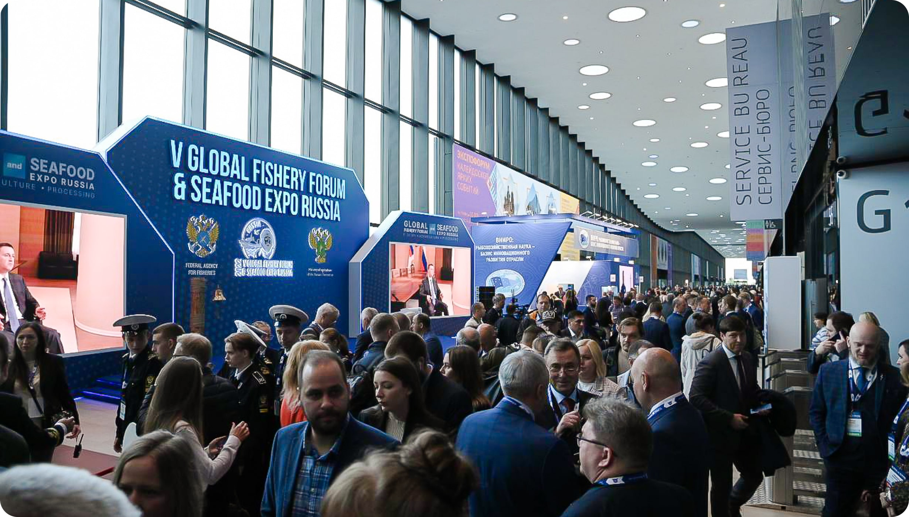

<% var data = {

  title: 'Fishery exhibition in qindao to be recheduled',
  head: ''

} %>

<%= _.template(require('./html-includes/header.html').default)({data}) %>

<%= _.template(require('./html-includes/page-head.html').default)({data}) %>

<section class="page-block overflow-hidden">

  <div class="news-nav flex flex-align-center flex-justify-between flex-wrap gap-4 mb-5 mb-md-10 pb-md-10">
    <div class="news-nav__btns flex flex-align-center flex-wrap gap-2 p-4 p-md-0">
      <button class="news-nav__btn btn btn--text btn--contur btn--white-bg text-body-2 text--regular fade-40 px-4" disabled>#ForeignEvents</button>
      <button class="news-nav__btn btn btn--text btn--contur btn--white-bg text-body-2 text--regular fade-40 px-4" disabled>#ExhibitorsNews</button>
      <button class="news-nav__btn btn btn--text btn--contur btn--white-bg text-body-2 text--regular fade-40 px-4" disabled>#Catching</button>
      <button class="news-nav__btn btn btn--text btn--contur btn--white-bg text-body-2 text--regular fade-40 px-4" disabled>#Processing</button>
    </div>
    <div class="text-body-1">24.10.22</div>
  </div>

  <div class="text-body-2 text-md-body-1 lh-1-5 mb-5">
    V Global Fishery Forum & Seafood Expo Russia 2022 were held on 21-23 September in St. Petersburg for the fifth time and became the largest in its history. This year, the forum and the exhibition were attended by more than 12,469 specialists from 70 countries of the world and 82 regions of Russia. Official delegations from Argentina, Mauritania, Belarus, Myanmar, Guinea-Bissau, Abkhazia, Indonesia, Senegal and Gambia were participated in the event.
  </div>
  <div class="text-body-2 text-md-body-1 lh-1-5 mb-5 mb-md-10">
    The plenary session, the main event of the business programme, was dedicated to the concept of ‘Smart Fishing’. Federal Agency for Fisheries Director Ilya Shestakov read out a welcome address to the participants from Russian Federation Council Chairwoman Valentina Matviyenko and stressed that the primary goal of the Forum is to provide a meaningful, multilateral approach to the integrated development of the fisheries industry, taking into account different economic, social, environmental, and scientific aspects. The ongoing changes in the global economy, the geographical segmentation of the market, the extension of supply chains affect the pricing and availability of fish. In addition to new challenges, the importance of environmental management continues to grow, as Russia adheres to the principles of sustainable fishing, while focusing on scientific data, actively promoting the sustainable use of aquatic biological resources, and introducing innovations in shipbuilding and fish processing.
  </div>
  <div class="pic pic--segment progress-container radius-6 mb-5 mb-md-10">
    <div class="progress progress-circle color-light-blue"></div>
    
  </div>
  <div class="text-body-2 text-md-body-1 lh-1-5 mb-5">
    In his welcome address, Russian Minister of Agriculture Dmitry Patrushev underscored the event’s importance for strengthening cooperation and making optimal decisions about measures to regulate and support the industry. Such decisions include developing fishing industry science, building new research vessels, providing assistance in the transportation of fish products, and other support measures for fishing and fish processing companies in the form of subsidies and investments in new production facilities. The Ministry of Agriculture reports that nine new specialized fish feed production plants with capacity of more than 220,000 tonnes per year will be commissioned in Russia over the next five years. The goal has been set that domestically produced feed will cover all the demands of fish farmers for this product by 2030. Russian Deputy Minister of Industry and Trade and State Secretary Viktor Yevtukhov noted the importance of Russia’s technological sovereignty in the production of fish processing and ship equipment. He also said it would be ill-advised to reject cooperation with other countries and pointed out the need for state support and a feasibility study. Kamchatka Territory Governor Vladimir Solodov said the industry needs to produce a greater economic return to the development of his region and that local fish processing enterprises are implementing several projects as part of the investment quota programme. At present, seven of the eight projected plants have already been built in Kamchatka and thousands of jobs have been created. In addition, major fishing clusters are being built in the region and are already engaged in the waste-free processing of aquatic biological resources.
  </div>
  <div class="text-body-2 text-md-body-1 lh-1-5 mb-5">
    The business programme included 35 events with 139 speakers. The events focused on practical issues concerning the functioning of the fisheries industry: shipbuilding, equipment, the production of finished products, logistics, storage, the development of the domestic market and new export destinations, fish consumption, scientific and personnel support for the industry, and aquaculture. At the annual conference, the authors of the continuous cold chain bill discussed the final draft of the bill with industry participants. Representatives of the Eurasian Economic Commission took part in a discussion about the prospects for aquaculture in the Eurasian Economic Union.
  </div>
  <div class="text-body-2 text-md-body-1 lh-1-5 mb-5">
    The event venue also hosted the Fishery Skills International Educational Forum for the first time this year. The participants considered both specific expertise for a number of industry professions and prospects for international academic cooperation to ensure the industry’s sustainable development. <br>
    More than 400 companies from 34 regions of Russia and 14 countries presented their products and services at the Forum and Expo. Pavilion G featured an exposition about the catching and processing of fish, finished products, aquaculture, logistics, and other services for the industry, while Exhibition Hall H was devoted to shipbuilding, ship repair, and equipment. In addition to the largest representatives of the fisheries and related industries, numerous small and medium-sized enterprises also took part in the Expo.
  </div>
  <div class="text-body-2 text-md-body-1 lh-1-5 mb-5">
    Fish and seafood suppliers and traders held over 720 rounds with the management of retail chains and online stores at the Retail Centre. Manufacturers of fish products also presented 53 new items at the New Products Showcase.
  </div>
  <div class="text-body-2 text-md-body-1 lh-1-5 mb-5">
    Several important agreements were also concluded on the sidelines of the Forum and the Expo. The Russian Federal Research Institute Of Fisheries and Oceanography (VNIRO), the leading research institute in the industry, agreed to cooperate with the Educational Projects Support Fund, the Museum of the World Ocean, and Melkombinat. The Centre for Fisheries Monitoring System and Communications signed agreements with Sitronics and the Almazov National Medical Research Centre. The Fishery Shipowners Association signed an agreement with the Sectoral Catering Development Union. The Far East and Arctic Development Corporation agreed with the industry expo operator Exposolutions Group to jointly develop the domestic market and consumer culture. The National Sea Ranching Association and Sberbank agreed to develop cooperation in fish farming and produce fish feed and planting material. A Russian-Belarusian working group also signed a protocol.
  </div>
  <div class="text-body-2 text-md-body-1 lh-1-5">
    The event was organized by the Federal Agency for Fisheries with the information support of the Russian Ministry of Agriculture. Expo Solutions Group was in charge of the operation of the event. <br>
    Event partners: Rosselkhozbank (General Partner), Norebo Holding (Official Partner), Sberbank (Partner Bank), Sigma Marine Technology (Registration Area Partner), Antey Group (Strategic Partner), Fishery Shipowners Association (Business Partner), MMC Norilsk Nickel (Partner), K-Flot Group (Business Programme Partner), and Bibi Car Rus (Transfer Partner).
  </div>

  <% var news = [
    {
      img: '1',
      text: 'Fishery Exhibition in Qindao to be rescheduled'
    },
    {
      img: '2',
      text: 'VI Global Fishery Forum & Seafood Expo Russia 2023: Start of Sales'
    },
    {
      img: '3',
      text: 'Dates Set for VI Global Fishery Forum & Seafood Expo Russia 2023'
    },
    {
      img: '4',
      text: 'V Global Fishery Forum & Seafood Expo Russia 2022: New Opportunities for the'
    },
  ] %>

  <div class="news mt-5 mt-md-10 pt-md-10">
    <div class="font-alt text-h6 text-md-h4 text-lg-h1 text--bold text--center text--uppercase mb-4">other NEWS</div>
    <div class="text-body-2 text-md-body-1 text--bold text--center text--uppercase mb-5 mb-md-10">LEARN MORE ABOUT OUR EVENT</div>
    <div class="grid grid-spacing-4 grid-spacing-lg-7">
      <% for (var i = 0; i < news.length; i++) { %>
        <div class="grid-col-12 grid-col-md-6 grid-col-lg-3">
          <%= _.template(require('./html-includes/news.html').default)({news, i}) %>
        </div>
      <% } %>
    </div>
  </div>

</section>


<%= _.template(require('./html-includes/footer.html').default)({data}) %>